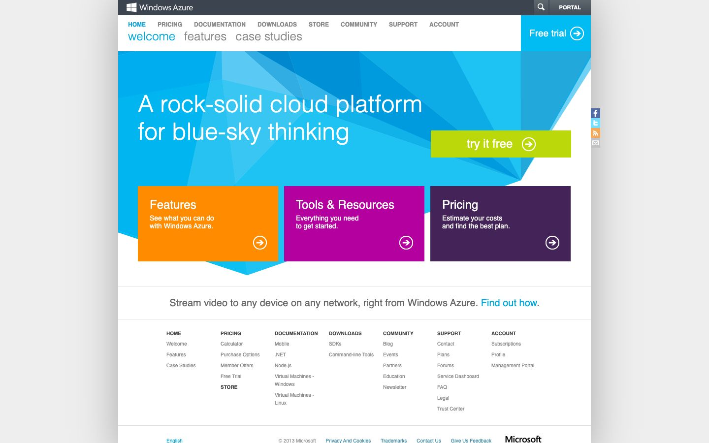

References / Website / 389
Windows Azure website, 2013
Microsoft’s cloud site in full Metro dress: a faceted blue hero, large light tabs, and three solid color tiles.
- Source
- windowsazure.com, Windows Azure home page (archived copy)
- Creator
- Microsoft
- Made
- 2013
- Style
- Flat design (agent-proposed, not yet reviewed by a person)
- Moods
- Bright, clean, corporate
- Evidence
- Captured with
tools/capture.mjs(headless Chrome, 1440 × 900) on 28 September 2026 from the Wayback Machine copy of 14 February 2013, and inspected. The screenshot shows the first viewport; the measurement covers up to four screens. Nothing covers the page. Segoe UI is not installed on the capture machine, so text that the archive did not serve as a web font renders in a fallback sans-serif. A capture of the 31 May 2013 copy showed a blank hero and was deleted. - Reviewed
- Rights
- Third-party work, stored with credit for commentary. License: unverified. Rights policy
The address now leads to Microsoft Azure, which has a different design.
Observed
- A dark slate top bar holds the Windows Azure wordmark and a square PORTAL button.
- Under small uppercase gray navigation, three large lowercase tabs read welcome, features, and case studies. The active tab is cyan.
- A cyan square with the words “Free trial” and a white circled arrow fills the top right corner.
- The hero is a field of blue and cyan triangular facets. The headline “A rock-solid cloud platform for blue-sky thinking” is large white type, next to a lime-green “try it free” rectangle.
- Three square-cornered tiles in orange, magenta, and dark purple each hold a white title, one short line, and a white circled arrow.
- The footer is plain gray link columns on white, divided by thin gray rules.
Why it belongs
Measured: 26% of screenshot pixels are saturated, in 3 hue groups; no box has rounded corners, and 17% of boxes have a 1 px border. The computed-style color share is only 0.03, because the tiles and hero are drawn in ways the extractor does not count as filled boxes. The white page frame casts one large soft shadow (85 px blur), so the capture fails the shadow range.
Each facet in the hero is a single flat tint, so the hero suggests depth without a gradient.
Borrow
Use a row of three equal solid tiles, each a different saturated hue, with a white title and a circled-arrow glyph as the only signifier.
Set secondary navigation as large, light, lowercase words, with the active word in the accent color.
Measured
Machine-extracted by tools/extract-traits.js on . Full measurement.
- Type families
- Segoe UI (100%)
- Type scale ratio
- 1.17
- Median radius
- 0 px
- Mean chroma
- 0.02
- Palette
- #ffffff 40%
- #eeeeee 39%
- #888888 12%
- #3c454f 5%
- #5f676f 2%
- #4a91ac 2%
- #0ca2da 1%
- #999999 1%

